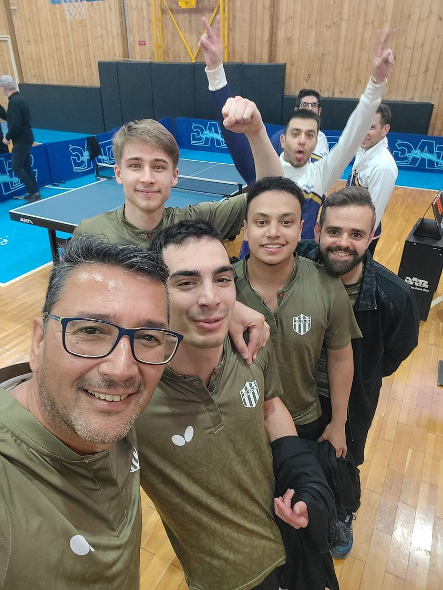
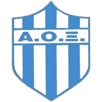

Οι κάτοικοι του Ξυλοκάστρου φημίζονται για την ενασχόληση τους με τον αθλητισμό. Το Ξυλόκαστρο δηλώνει το παρόν του σε πολλά και διάφορα αθλήματα.
Στο ποδόσφαιρο η ομάδα Ηρακλής Ξυλοκάστρου βρίσκεται στη κατηγορία Α'Τοπικού Ανδρών. Το ίδιο ισχύει και για την ομάδα Μπάσκετ Ανδρών η οποία ονομάζεται απλά ΑΟΞ. Όσον αφορά το πινγκ-πονγκ, η ομάδα του ΑΟΞ αποκτώντας δύο Σουηδούς Αθλητές οι οποίοι αγωνίζονται στην Α1 κατηγορία της χώρας τους ανέβηκε κατηγορία και από Β' Εθνική Ανδρών που ήταν για 8 αγωνιστικές χρονιές πλέον βρίσκεται στην Α2 κατηγορία Ανδρών!! Παρακάτω βλέπετε τους αθλητές της ομάδας.
 